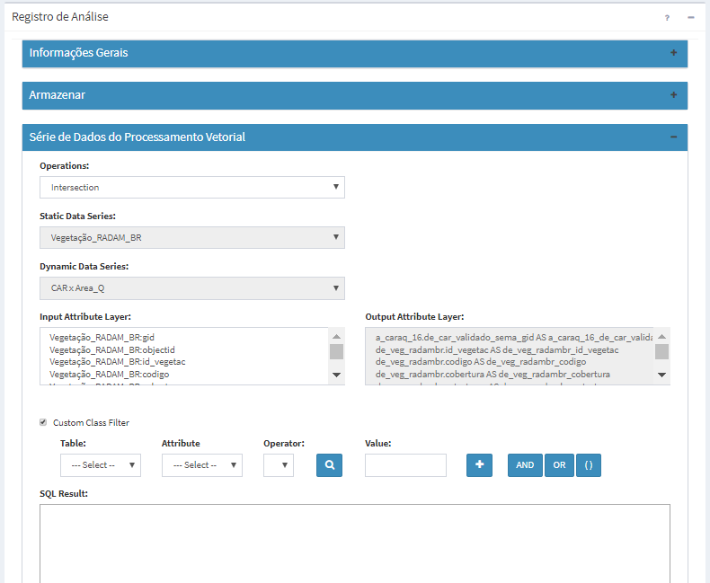

Processamento Vetorial

Análises baseadas em Processamento Vetorial utilizam as geometrias de dois dados vetoriais, sendo um estático e outro dinâmico, para realizar operações geométricas e criar geometrias, como por exemplo a interseção entre os polígonos desses dois dados. Atributos descritivos de ambos os dados de entrada podem ser selecionados para fazerem parte do novo dado dinâmico de saída, assim como utilizar os atributos para filtrar quais geometrias serão utilizados na análise.
Nota: Nesta versão somente a operação de interseção geométrica está disponível.
Os resultados dessa análise dependem dos tipos geométricos (ponto, linha ou polígono) de entrada dos dados estáticos e dinâmicos. Por exemplo, se ambos mapas estático e dinâmicos utilizam geometria de polígonos (áreas) o resultado da operação vetorial de interseção sempre será polígono, pois neste caso descartamos as possíveis geometrias de linhas e pontos que eventualmente podem resultar de interseção. Já se o dado estático é polígono e dinâmico ponto, o resultado sempre será ponto. Note que em ambos exemplos o atributo temporal (data/hora) do dado dinâmico de entrada é repassado para o dado dinâmico de saída.
Nota: Nesta versão ainda não é possível definir uma área de influência (“buffer”) sobre os dados estáticos que serão cruzados com os dados dinâmicos durante a execução da análise. Entretanto, se necessário monitorar as áreas de influência de algum objeto, por exemplo, áreas de influência sobre as linhas de transmissão de energia. Neste caso utilize o SIG de sua preferência. No TerraView5 você tem a opção de criar um “buffer” e selecionar que não deseja dissolver a fronteira entre as áreas de influência e incluir os atributos (colunas) do mapa de entrada.
A Figura 3.37 mostra que apesar da possibilidade de serem criadas geometrias de linhas e pontos da interseção de polígonos, neste caso somente será armazenada a geometria de polígono juntamente com a inclusão de um atributo com o cálculo da área em hectares dessa geometria.
Figura 3.37 – Módulo de Administração: Análise – Interseção de geometria de polígonos.
EDITANDO ANÁLISE BASEADAS PROCESSAMENTO VETORIAL
A Figura 3.39 mostra a área de trabalho utilizada para se definir uma análise baseada em Processamento Vetorial. Nesta interface deve-se definir um nome único para este tipo de análise, quais os dois planos de entrada que serão utilizados (estático e dinâmico), os atributos da nova tabela de saída e filtros sobre estes atributos. Descrevemos a seguir cada um dos campos dessa interface.

Figura 3.39– Análise : Interface de edição de Processamento Vetorial.
Registro de Análise – Dado Geral:
- Nome: Defina o nome da análise (campo obrigatório). O tamanho máximo do nome é de 100 caracteres. Não é permitido nomes duplicados.
- Tipo: Escolha o tipo “Processamento Vetorial”. As demais opções estão descritas nos itens associados - “Objeto Monitorado” , “Grade” e “PCD”. IMPORTANTE: Após salvar a análise o tipo não poderá ser alterado.
- Descrição: Campo não obrigatório para descrição da análise. O tamanho máximo do texto é de 250 caracteres.
- Serviço: Escolha o serviço de análise que estará associado a cada análise. Se necessário adicionar novos serviços de análise (local ou remoto) consulte Adicionar Serviço.
- Ativo: Botão ativo executará a análise de acordo com a programação (ver abaixo) definida para a análise. Se o botão estiver desmarcado a análise não será executada. Uma análise que não esteja ativa poderá ser executada apenas manualmente pelo botão “
 Executar” disponível na lista de análises da área de trabalho.
Executar” disponível na lista de análises da área de trabalho.
Registro de Análise – Armazenar
Utilize os parâmetros desta seção para definir o local de armazenamento dos dados. No caso de uma análise baseada em PCD, será solicitado o nome de uma tabela de banco de dados.
- Formato de saída: Para este tipo de análise apenas a opção “Análise de objeto monitorado - VP” encontra-se disponível.
- Nome da tabela: Digite o nome da tabela a ser criada para armazenar os resultados. Sempre que houver interseções entre as geometrias dos dados de entrada novos registros serão armazenados nessa tabela.
Registro de Análise – Armazenar - Agendamento
Nesta seção o usuário deve definir quando será executada a análise.
- Tipo: Escolha tipo “Manual”, “Agendamento”, “Reprocessamento de dados históricos”, ou “Automático”. Se “Manual” a execução da análise só será realizada se o usuário utilizar o botão “
 Executar” no item da lista de análises que desejar, ou ainda em “Salvar e executar” da análise aberta. Se “Agendamento” a execução da análise será por intervalos pré-definidos podendo também definir o tempo inicial. Se “Reprocessamento de dados históricos” a execução da análise será por intervalos pré-definidos podendo também definir o tempo inicial, porém em um período inicial e final no passado. Se “Automático” dependerá da chegada de dados dinâmicos.
Executar” no item da lista de análises que desejar, ou ainda em “Salvar e executar” da análise aberta. Se “Agendamento” a execução da análise será por intervalos pré-definidos podendo também definir o tempo inicial. Se “Reprocessamento de dados históricos” a execução da análise será por intervalos pré-definidos podendo também definir o tempo inicial, porém em um período inicial e final no passado. Se “Automático” dependerá da chegada de dados dinâmicos.
NOTA: Em todas opções do agendamento a tabela da análise armazena de forma contínua os resultados, exceto em “Reprocessamento de dados históricos” que a cada execução da análise os registros serão apagados para que os valores sejam atualizados.
- Data Inicial
 (somente se Tipo for “Reprocessamento de dados históricos”): Clique no campo para escolher a data e hora que será utilizada para início do reprocessamento.
(somente se Tipo for “Reprocessamento de dados históricos”): Clique no campo para escolher a data e hora que será utilizada para início do reprocessamento. - Data Final
 (somente se Tipo for “Reprocessamento de dados históricos”): Clique no campo para escolher a data e hora que será utilizada para fim do reprocessamento.
(somente se Tipo for “Reprocessamento de dados históricos”): Clique no campo para escolher a data e hora que será utilizada para fim do reprocessamento. - Unidade de tempo: Escolha um item entre “Segundos, Minutos, Horas e Semanalmente”.
- Frequência (somente se Unidade de tempo for Segundos, Minutos, Horas): Digite um valor de um número inteiro.
- Tempo Inicial
 (somente se Unidade de tempo for Segundos, Minutos, Horas): Clique no campo para escolher o valor de hora, minuto e segundo que será utilizado como referência para executar a análise. Campo não obrigatório e caso não definido será a partir do momento em que a análise for salva.
(somente se Unidade de tempo for Segundos, Minutos, Horas): Clique no campo para escolher o valor de hora, minuto e segundo que será utilizado como referência para executar a análise. Campo não obrigatório e caso não definido será a partir do momento em que a análise for salva. - Agendamento (somente se Unidade de tempo for Semanalmente): escolha uma das opções entre “Domingo, Segunda-feira, Terça-feira, Quarta-feira, Quinta-Feira, Sexta-feira e Sábado”
- Hora (somente se Unidade de tempo for Semanalmente): clique no campo para escolher o valor de hora, minuto e segundo que será executada para iniciar a análise.
Registro de Análise – Série de Dados do Processamento Vetorial
Nesta seção são definidos o tipo de operação (somente Intersection nesta versão), quais dos dois dados de entrada, atributos de saída e filtros.
- Operações: Escolha o tipo de operação “Intersection”.
- Série de Dados Estáticos: Escolha um dado estático previamente cadastrado.
- Série de Dados Dinâmicos: Escolha um dado dinâmico previamente cadastrado, ou resultado de outras análises.
- Atributos de Dados de Entrada: Na lista de atributos de entrada automaticamente são apresentados todos os atributos de ambos dados estático e dinâmico. Escolha um ou mais dos atributos disponíveis. Mantenha a tecla Ctrl pressionada + clique sobre os itens para seleções intercaladas. Mantenha a tecla Shift (↑) pressionada + clique sobre dois atributos para marcar um bloco de atributos.
- Atributos de Dados de Saída: Os atributos são automaticamente inseridos conforme são selecionados na lista de entrada acima. IMPORTANTE: ao salvar a análise os atributos de saída não poderão ser alterados, somente novos atributos podem ser adicionados.
NOTA: Por padrão o atributo temporal (data/hora) do dado dinâmico é transferido para o dado de saída, que também será um dado dinâmico, portanto, não é necessária sua seleção na lista de entrada. Este atributo temporal de saída recebe automaticamente o nome “execution_date”. Outro atributo automaticamente criado na saída será a área de interseção (em ha) quando as geometrias de entrada são polígonos, neste caso recebe o nome “calculated_area_ha”. Por último, o atributo que armazena a geometria resultante terá o nome “intersection_geom”.
- Filtros Customizados: Opção não obrigatória. Permite selecionar filtros (condições) sobre os atributos de ambos os dados de entrada. Equivale a cláusula “where” de uma expressão de consulta em SQL.
- Tabela: Escolha uma das tabelas associadas aos dados de entrada (estático ou dinâmico)
- Atributo: Escolha o atributo referente a tabela selecionada acima.
- Operador: Escolha uma das opções de operador (=, <, >, <=, >=, <> ou LIKE).
- Valor: Digite o valor do atributo ou utilize a lupa a esquerda para apresentar a opções disponíveis do atributo escolhido acima.
- + : Utilize este botão para inserir no campo de Resultado (SQL) o que foi definido nos itens acima.
- AND, OR ou (): Utilize estes botões para iniciar a definição de outros filtros. Note que o resultado apresentado é parte de uma expressão de consulta em SQL.
- Resultado(SQL): Campo editável que pode se alterado pelo usuário, mas tenha em mente as propriedades da clausula “where” de um comando “select” que será executado ao salvar a análise.
Após preencher todos os campos da análise, poderá utilizar o botão “Validar” para identificar se há erros de sintaxe no filtro acima. O botão “Salvar e executar” grava as últimas alterações e executa a análise mesmo que esta esteja inativa. Se desejar apenas gravar as alterações clique na seta do botão e escolha “Salvar”.
DICA: Além da mensagem apresentada ao salvar a análise, verifique no menu da Situação Atual se há erros na execução da análise.
Exemplo - Análise Processamento vetorial ( ).